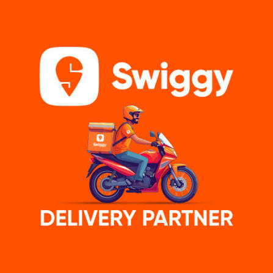
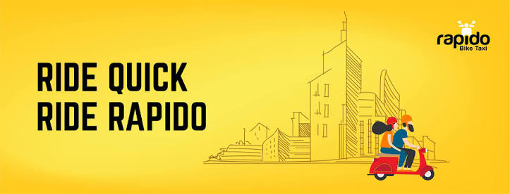
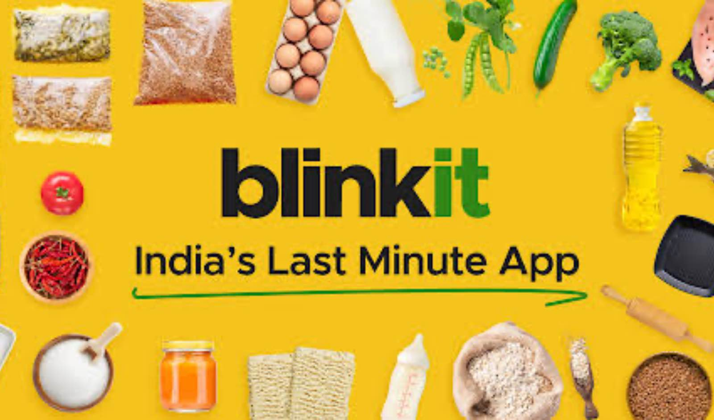

About zwiggy Delivery Partner
Swiggy delivery partners are independent contractors who deliver food and groceries across more than 600 Indian cities. They earn up to ₹60,000 per month through base pay, joining bonuses, and peak-hour incentives. Benefits include flexible shifts, accidental/medical insurance up to ₹12 lakhs, and educational support for their children.
Requirements: You must be at least 18 years old, own a two-wheeler, have a valid driving license, and possess a smartphone.
Onboarding: Download the Swiggy Delivery Partner App, fill out your registration form, and verify your documents.
Setup: Pay a nominal onboarding fee of around ₹1,500 and pick up your delivery bag and t-shirt.
To Become zwiggy Delivary partner

About Rapido Delivary partner
Rapido is a prominent Indian logistics and ride-hailing aggregator that facilitates parcel delivery (Rapido Box), food, and grocery deliveries using a vast network of over 1 million registered two-wheeler and auto "Captains" across more than 80 cities.
Service Categories: The platform facilitates C2C (Customer-to-Customer) parcel deliveries, third-party logistics, and direct food and grocery delivery from stores and restaurants to consumers.
How It Works (For Customers): Users can book package pickups and drops directly through the app. The service utilizes a base fare of about ₹35 for the first 2 km, followed by ₹15 for every subsequent kilometer. Customers receive order tracking URLs via SMS.
How It Works (For Partners): Individuals can sign up as "Captains" by downloading the Rapido Captain App. The platform offers flexible full-time or part-time work, real-time ride requests, and daily/weekly incentives.
To Become Rapido Partner

About Blinkit Delivary partner
A Blinkit Delivery Partner is an independent gig worker who delivers groceries and daily essentials from local "dark stores" to customers' doorsteps within minutes. They utilize their own two-wheelers and the dedicated Blinkit Delivery Partner Program to find jobs, manage flexible shifts, and earn weekly payouts.
Delivery partners pick up packed orders from localized Blinkit warehouses (dark stores) and deliver them within a 3-5 kilometer radius.
Earnings: Workers typically earn through a per-packet and distance-based rate card, often making around ₹30 to ₹50 per order, with monthly earnings going up to ₹50,000 when including peak-hour incentives.
Benefits: Partners can choose flexible schedules (4, 8, or 10-hour shifts) and receive weekly payouts along with accidental and medical insurance.